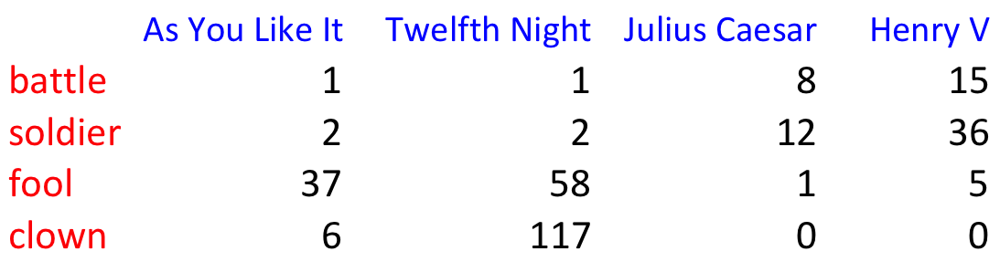
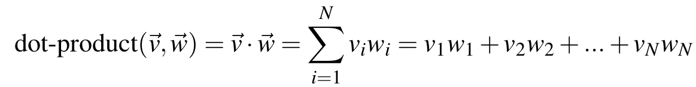
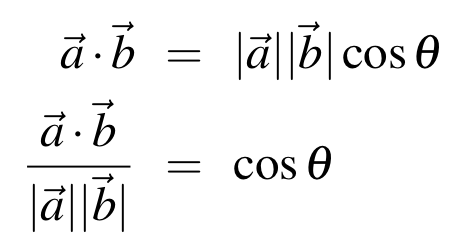
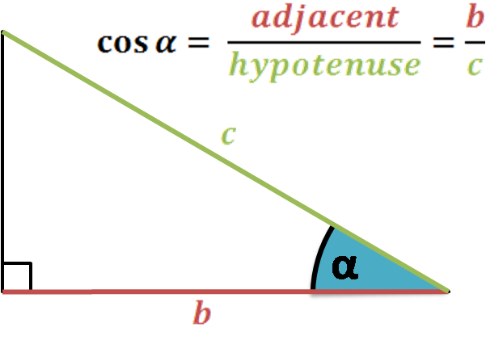
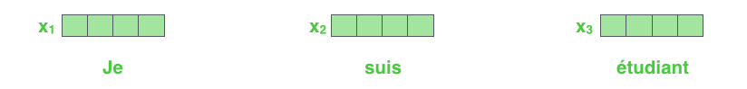

Start
Microcredencial Algoritmos verdes para la IA: diseño e implementación
Green NLP Today
Tema: Natural language processing · Sesión 1 · Ponente: Olga Zamaraeva
Welcome, everyone. This is Session 1 of the microcredential on green algorithms for AI — "Green NLP Today." I'm Olga Zamaraeva; I'll teach this session and the next two.
First, a disclaimer: I taught this module last year too, and it did not go well, in my opinion — it was super technical and boring for everyone. It's important to study model architectures and the underlying math, what makes one architecture more computationally and environmentally expensive than another, but I don't think that's the best focus for this course. So this year I changed everything, which means I'm doing this material for the first time today, which can be a little embarrassing. I'll even use a prompter on my iPad to help me explain things properly and not forget something important. Just a disclaimer.
How this session works
One page: explanations, interactive panels, code
- This page is the whole session. Open it on your laptop or phone, now or later:
olzama.github.io/teaching/GreenAI
- Interactive screens are animations you can step through, change and replay.
- Try it screens have Python that runs in your browser. Nothing to install.
- The longer notebooks run in Google Colab.
olga.zamaraeva@udc.es · UDC Teams · CITIC, 2nd floor
A note on how this session works. This year there are no slides. We use one web page for the whole session. You see it on the screen, and you can open the same page on your laptop or phone.
The address is on the screen: olzama.github.io, teaching, GreenAI. You can follow along during the session and come back to the page later.
Some screens are explanations, like slides. Some are interactive: animations you can step through, change, and replay, with real numbers. Some are exercises: Python code that runs in your browser. Nothing to install. The longer notebooks run in Google Colab.
My contact details are at the bottom of the screen.
Instructor's profile
- Computational linguist: syntax and machine translation
(PhD)
(UDC, since 2021)
PhD in computational linguistics, University of Washington, Seattle; postdoc at UDC since 2021; my own research is in syntax and machine translation, which is part of why MT is today's running example — it's the area I can go deepest on if you have questions. I also study how AI-generated language differs from human-written text, though so far only in English, and only in formal genres like news and scientific papers.
NLP and what it costs
Natural Language Processing & Computational Linguistics
- NLP: building systems that do things with language
- CL: using computation to study language
These terms are sometimes used interchangeably, and sometimes to denote two related but distinct fields, which can be confusing. Originally, Computational Linguistics uses computers as a tool to study language scientifically — syntax, semantics, how languages differ typologically. The object of study is language as a natural phenomenon, something people do. Natural Language Processing used to be an engineering discipline: building systems that do something useful with language — translate it, summarize it, answer questions about it. Recently NLP has become very close to AI, which is why this module exists in this course. AI used to ask questions like "how similar is a model's performance to some measured human capacity, and how do we close the gap." Now, thanks to this merge with NLP, AI got good enough at so many tasks that the field shifted to questions like "how do we tell AI apart from a person" or "how should people work with AI." Question for you: is it easy to tell if you're talking to AI or a person? Is it easy to tell if you're reading AI-generated text? What if it's a Galician text?
One engine now runs many tasks
Before: separate models, one per task
Now: one model, prompted
This is where “NLP” and “AI” blur.
Radford et al., “Language Models are Unsupervised Multitask Learners,” 2019; Brown et al., “Language Models are Few-Shot Learners,” NeurIPS 2020
Until recently, "NLP" meant a separate, purpose-built model for each task: one system for translation, a different one for summarization, another for classifying sentiment. What changed is this: a single model, trained on nothing more sophisticated than "predict the next word of text" — the definition of a language model — turned out to be able to do all of these tasks. You just phrase your request differently to the same model, which is what "prompting" means. OpenAI showed this could work in 2019 with GPT-2; the real scale came in 2020 with GPT-3. This is the moment the public conversation stopped distinguishing "NLP" from "AI" — a general-purpose language model looks, from the outside, like general intelligence.
Where the costs come from
A language model uses electricity, hardware and water for its whole life
- Building the hardware has a cost too, before any of this runs.
So NLP today means large language models. What does a language model cost? There are four places where the cost comes from.
First, training. Training means computing the model's parameters from a large amount of text. For a large model this uses many processors for days or weeks. This cost is paid once for each model.
Second, inference. Inference means using the trained model: you send a request, and the model computes an answer. One request costs little. But it is paid for every request, by every user, for as long as the model is in use.
Third, storage. The model's parameters and the data have to be kept somewhere: on disks, and in the memory of the machines that run the model. That hardware uses electricity all the time, also when nobody is asking anything.
Fourth, cooling and water. Processors turn electricity into heat. A data center has to remove that heat. Many data centers do it by evaporating water. So a data center uses water as well as electricity.
And one more: the hardware itself has to be built, and building it also has a cost. We will come back to this when we talk about measurement.
Training once, inference every time
(once)
model
- Over a model's life, the cost of all its requests can add up to more than the cost of training it.
- Generating text costs more than classifying it: the model runs once for every word it writes.
- One request runs on more than the processor that computes it: the host machine, idle spare machines, and the data center around them.
Training is paid once. Inference is paid every time. A popular model may answer millions of requests a day, for months or years. So over the life of a model, the cost of all its requests can add up to more than the cost of training it.
The cost of a request depends on the task. If the model only has to pick an answer from a few options, for example to classify a review as positive or negative, it runs once. If it has to write text, it writes one word at a time, and it runs once for every word. So a long answer costs more than a short one.
And a request does not only use the processor that computes the answer. It also uses the machine around that processor, spare machines that wait for the next request, and the data center: cooling, power supply, and so on. When we measure, we have to decide which of these we count. The next screens show why that matters.
How do we measure it?
Computation, power and energy
An example: one hour on the GPU you will use in Colab
- FLOPs (floating-point operations): how much computation. They count the work, whatever the hardware.
- Power, in watts (W): how fast a device uses electricity, at a given moment.
- Energy, in watt-hours (Wh) or kilowatt-hours (kWh): power × time. This is what you pay for.
An NVIDIA T4 GPU
A real run draws less than the maximum, so 0.07 kWh is an upper bound for the GPU alone.
To compare costs, we need units. Let's go through them with one simple example.
First, FLOPs: floating-point operations. One FLOP is one multiplication or one addition of two numbers. FLOPs count how much computation a model does. They do not depend on the hardware. The same model, on the same input, needs the same number of FLOPs on any computer.
But FLOPs are not electricity. How much electricity the computation uses depends on the hardware that runs it. For electricity there are two units, and people mix them up.
Power is measured in watts. Power says how fast a device uses electricity at a given moment. Energy is power times time. It is measured in watt-hours, or in kilowatt-hours: one kilowatt-hour is a thousand watt-hours. Energy is what appears on an electricity bill.
The example on the right is the GPU you will use in Colab today, an NVIDIA T4. Its maximum power is 70 watts. If it runs at maximum power for one hour, it uses 70 watt-hours. That is 0.07 kilowatt-hours. A real run usually draws less than the maximum, so this is an upper bound, and it is only the GPU, not the rest of the machine.
From energy to carbon and water
The same hour on the T4, with example values
- PUE (Power Usage Effectiveness): the data center's total energy ÷ the computers' energy. 1.0 would mean no overhead.
- Carbon intensity: grams of CO₂eq per kWh of electricity. It depends on where and when: the grid's mix of coal, gas, wind, sun.
- CO₂eq: all greenhouse gases, converted to the amount of CO₂ with the same effect.
- WUE (Water Usage Effectiveness): liters of water per kWh used by the computers.
- Operational carbon comes from running the hardware; embodied carbon, from building it.
Example values. Real ones depend on the data center and the grid.
Notebook 1 measures with CodeCarbon: it tracks the power of the processor, GPU and memory while your code runs, and multiplies the energy by your region's carbon intensity.
Energy is not yet carbon. We need a few more steps, and each step has its own unit.
First, PUE, power usage effectiveness. A data center uses energy for more than the computers: for cooling, for lighting, for converting power. PUE is the total energy of the data center divided by the energy of the computers. A PUE of 1.0 would mean no overhead at all. With a PUE of 1.1, our 0.07 kilowatt-hours become about 0.077.
Second, carbon intensity. This says how many grams of CO2-equivalent are emitted to produce one kilowatt-hour of electricity. It depends on where the electricity comes from: coal, gas, wind, sun, nuclear. So it changes from country to country, and also from hour to hour. With an example value of 200 grams per kilowatt-hour, our hour on the GPU emits about 15 grams.
CO2-equivalent means that other greenhouse gases, like methane, are counted too. Each is converted into the amount of CO2 that would have the same effect on the climate.
Third, water. WUE, water usage effectiveness, is the number of liters of water a data center uses for each kilowatt-hour that its computers use. WUE is applied to the computers' energy, before PUE. With 1.15 liters per kilowatt-hour, our hour uses about 0.08 liters, a small glass of water.
All of this is operational carbon: it comes from running the hardware. Embodied carbon comes from building the hardware: making the chips, the servers, the building. It is real, but harder to measure, and most reports leave it out.
These are example values, to show the steps. In Notebook 1 you will measure with a tool called CodeCarbon. It tracks the power of the processor, the GPU and the memory while your code runs. It adds this up to energy, and it multiplies the energy by the carbon intensity of your region.
A real measurement: one prompt
The median Gemini text prompt, May 2025, as measured by Google
| What is counted | Wh |
|---|---|
| AI accelerators, while computing | 0.14 |
| host processor and memory | 0.06 |
| idle machines, kept ready | 0.02 |
| data center overhead (PUE 1.09) | 0.02 |
| total | 0.24 |
- Counting only the accelerators gives a little over half of the total: what you count changes the number.
- Carbon and water follow from the energy, the grid and the WUE: 0.03 g CO₂eq and 0.26 mL of water.
- Measured by the company that runs the model, for its own system. Not independently checked.
Source: Elsworth et al., “Measuring the environmental impact of delivering AI at Google Scale,” 2025 (arXiv:2508.15734)
Here is a real measurement of inference, from a paper published in August 2025 by Google. It measures one text prompt to Gemini, Google's chatbot: the median prompt, in May 2025.
The table shows what they counted. The AI accelerators, the chips that compute the answer, use 0.14 watt-hours. The host machine around them, its processor and memory, adds 0.06. Machines that sit idle, ready for the next requests, add 0.02. And the data center overhead adds 0.02 more. Their PUE is 1.09. The total is 0.24 watt-hours.
Look at the first row and the last row. If you count only the accelerators, you get a little over half of the total. So two honest measurements of the same prompt can differ by almost a factor of two, just because they count different things. When you read a number like this, always ask what was counted.
From the energy, they compute carbon and water, with the steps from the last screen: 0.03 grams of CO2-equivalent, and 0.26 milliliters of water, about five drops.
One more thing: this measurement is by the company that runs the model, for its own system. It has not been checked independently. It is still one of the most complete measurements published so far.
What this course covers
The goal: to talk about modern LLMs, and what they cost
Three sessions, one running project: the Green NLP Benchmark Lab
- To understand large language models, we need to understand language models in general, and how NLP got to them
Language models
Quantized language models
Retrieval-augmented generation
- Session 2: the same model, with fewer bits for each of its numbers
- Session 3: not a kind of model, but a way of using one: give it only the relevant pieces of the documents
- Every session: the same tasks, measured the same way. One row per run in your own leaderboard.
Now, what this course covers. The goal is that you can talk about modern large language models, and about what they cost, with understanding.
To understand large language models, we first need to understand language models in general. And for that, it helps to see how NLP got to them. So today we go through a short history of language models, from the simplest one to the transformer.
The three sessions follow three ideas. Today, session 1: language models. Session 2: quantized language models. That is the same model, but each of its numbers is stored and computed with fewer bits. Session 3: retrieval-augmented generation. This is not a kind of model. It is a way of using a model: instead of giving the model everything, we first retrieve the relevant pieces of the documents, and give the model only those.
In every session we run the same tasks and measure them the same way. Every run adds one row to a leaderboard, a file you keep for all three sessions. By the end, you have your own comparison.
Two tasks: question answering and translation
Question answering
- Answer questions about a small set of documents
- Easy to evaluate: an answer is right or wrong, so the score is the share of right answers
- The main task for measurement, in all three sessions
Machine translation
- Harder to evaluate: a sentence has many good translations
- Our example, Galician to English. Galician is a low-resource language: there is much less text for it than for Spanish or English.
Unha tía miña, que todo o solucionaba con ditos e refráns, dicía algo así como “un é escravo do que di e dono do que cala”
from the novel Speechwriter by Paulo Naseiro
In the hands-on parts we work with two classic NLP tasks.
The first is question answering. The model gets a small set of documents and a question, and it answers. This task is easy to evaluate: each answer is right or wrong, so the score is simply the share of right answers. That is why it is our main task for measurement, in all three sessions.
The second is machine translation. It is harder to evaluate, because one sentence has many good translations. But it shows very well how language models work. Attention, which we will see today, was invented for translation.
Our example is this sentence, from the novel Speechwriter by Paulo Naseiro. It is in Galician. Galician is a low-resource language: there is much less text in Galician than in Spanish or English, and so much less data to learn from. We will come back to the two highlighted words, tía miña, many times today.
From n-grams to transformers
Each step fixes a problem of the step before.
| Step | What it adds | What is still missing |
|---|---|---|
| 1 N-grams (statistical, 1990s) | predict the next word by counting | aunt and uncle are unrelated words |
| 2 Embeddings (neural, 2013) | a learned vector per word: similar words get similar vectors | vectors for words, not for sentences |
| 3 Encoder–decoder (2014) | read a sentence into one vector, write the translation from it | one vector for a whole sentence: early words fade |
| 4 Attention (2015) | the decoder looks back at every source word | the source is still read one word after another |
| 5 Self-attention (2017) | every word looks at every word of its own sentence, all at once | one round of looking |
| 6 Transformers (2017–today) | many blocks of self-attention, stacked: today's LLMs | cost grows with size and length |
Before statistics, NLP systems were written by hand, as rules. Each step since has replaced hand-written knowledge with more data and more computation.
Here is the plan for the technical part of today. We go in six steps. Each step fixes a problem of the step before. The bar at the bottom of the screen shows which step we are on.
Before these steps, NLP systems were written by hand, as rules. Each step since then has replaced hand-written knowledge with more data and more computation. That is why the history matters for a course about costs.
Step 1 is n-grams. An n-gram model predicts the next word by counting which words follow which. Its problem: it has no idea that aunt and uncle are similar. They are just two different words.
Step 2 is embeddings. Each word gets a vector, a list of values, learned from the words around it. Similar words get similar vectors. But these are vectors for single words. They say nothing about a sentence.
Step 3 is the encoder–decoder model for translation. The encoder reads the whole sentence into one vector. The decoder writes the translation from that vector. Its problem: one vector has to hold the whole sentence, and the early words fade.
Step 4 is attention. The decoder may look back at every source word, and it decides how much to use each one. But the source sentence is still read one word after another.
Step 5 is self-attention. Every word looks at every other word of its own sentence, all at the same time.
Step 6 is the transformer: many blocks of self-attention stacked on top of each other. This is the architecture of today's large language models. Its cost grows with the size of the model and the length of the text. That is where the rest of the course starts.
Step 1 · N-grams
What is a language model?
- It predicts the next word.
- It gives a probability to every word in the vocabulary. The probabilities add up to 1.
- An n-gram model is the simplest kind: it counts word sequences in a corpus, then divides.
 Credit: Jurafsky & Martin, Speech and Language Processing
Credit: Jurafsky & Martin, Speech and Language ProcessingAfter “my”: one probability per word
Counted from three sentences, on the next screen. The vocabulary has 7 words.
Let's step back and give some definitions. We said there were various epochs in NLP; we'll skip the symbolic era for now, though it's important — maybe we'll cover it in Session 3 when we talk about retrieval-augmented generation. So we start with the statistical era, directly with "language models." Language models were the step from task-specific to general AI. Formally: a language model assigns a probability to sequences of words, and in practice is almost always used to predict the next word given the words so far — not just a single guess, but a full probability distribution over the entire vocabulary, where every word gets some probability, even if tiny. This is the task underlying everything from the 1990s n-gram counting we're about to do by hand, to GPT-3. N-grams are the simplest possible instance of this idea: instead of anything learned or neural, just count how often word sequences occur in real text, and turn counts into probabilities.
Count, then divide
The corpus
- This is a bigram model: the next word depends on the one word before it.
- Counting, then dividing: that is the whole model.
- A Galician model has far fewer sentences to count from than a Spanish or English one, so its estimates are noisier.
An n-gram is just a sequence of n consecutive words — a bigram is 2 words, a trigram is 3, and so on. This is a bigram model: it estimates the probability of the next word using only the one preceding word.
Our toy corpus stays with the story's cast of characters. The formula on screen is nothing more than: out of all the times "my" appeared, what fraction of the time was it immediately followed by "aunt"? "My" appears 3 times total; "my aunt" appears 2 of those times, so P(aunt|my) = 2/3 ≈ 0.67. "My uncle" appears once, so P(uncle|my) = 1/3 ≈ 0.33. Counting, then dividing — that really is the entire model, there's no hidden step.
Question for you: is it better to use a bigger n? Using a longer n gives the model more context to condition on, but the exact sequence it needs to have seen becomes rarer and rarer in any real corpus — more context helps in principle but makes the sparsity problem worse in practice. And this is the thread we keep pulling: a Galician n-gram model has dramatically fewer real sentences to count from than a Spanish or English one does — every count in this toy example stands in for a much bigger, real problem. Sparse data means noisy, unreliable probability estimates.
Count, generate, score
Count, then divide. Press Replay counting. A window slides over the three sentences and fills the count table, one pair at a time. Click the row for “my”. The page divides: aunt gets 0.67, uncle gets 0.33. These are the numbers from the last screen.
Now choose Edit the corpus. Add the sentence “my uncle spoke kindly”. Press Use this corpus. Click “my” again. Aunt and uncle now get half each.
Then move the smoothing slider. Smoothing adds a small count k to every pair, so some probability moves to pairs the corpus never saw.
Press the tab Generate text. Pick a start word and press Generate, first with Greedy, then with Sample. Greedy always takes the most frequent next word. Sample draws a word using the probabilities.
Press the tab Score a sentence. Type “her aunt stayed quiet”. The corpus never saw “her”, so one factor is 0, and the whole sentence gets probability 0. This is the sparsity problem again.
Build the bigram model
Some lines have gaps marked ___. Replace each gap with code, then press Run. The page checks your answer. Hints and solutions are under each exercise. Run the exercises in order: later ones use your earlier code.
Exercise 1 · Count bigrams, then divide
Complete build_bigram_counts and bigram_prob. counts[w1][w2] is how many times the pair w1 w2 occurs. unigram_counts[w1] is how many pairs start with w1. bigram_prob returns P(w2 | w1) = count(w1 w2) / count(w1). The cell should print 0.67 and 0.33.
Hints
- The inner loop looks at position
iand the word right after it,words[i + 1]. - The pair count is indexed by the first word, then the second word.
- The probability divides the pair count by the count of the first word.
Exercise 2 · Change the data, change the model
Add at least two sentences to EXTENDED_CORPUS so that, in the new model, P(uncle | my) is larger than P(aunt | my).
Hints
- The original corpus has “my aunt” twice and “my uncle” once.
- Each new sentence is a Python string, for example
"my uncle spoke kindly".
Now everyone works alone, for about 15 minutes. There are three screens of exercises: this one and the next two.
The code runs in the browser. Nothing to install. The first Run loads Python and takes a few seconds. If a laptop has trouble, the same exercises are in the Colab notebooks linked at the top.
How it works: replace every gap, the three underscores, with code. Press Run. The page runs the code and then checks it. A green line means the exercise passed. Hints and the solution are under each exercise. Ask them to try before they open the solution.
Exercise 1 rebuilds the model from the worked example. It should print 0.67 and 0.33. Exercise 2 changes the corpus, so the numbers change: the data is the model.
Generate text with the model
Exercise 3 · Generate text greedily
Given a start word, the model repeatedly picks the next word with the highest count. Complete the loop in generate: pick that word, and add it to the sentence.
Hints
candidatesmaps each possible next word to its count, for example{'aunt': 2, 'uncle': 1}.max(candidates, key=...)returns the key with the largest value ofkey(word).
generate("her", counts, unigram_counts) and run it. Why does the model stop at once? There is far less Galician text online than Spanish or English text. What would you predict about an n-gram model trained on Galician?Exercise 3 makes the model write. Start from a word. Look at the words that followed it in the corpus. Take the most frequent one. Repeat.
From “my” it writes “my aunt stayed quiet”. From “her” it writes nothing more. The corpus never saw “her”, so there is no row to look up.
The question at the bottom links this to Galician. Less text means more words and pairs the model has never seen. So it gets stuck more often.
Use the model to fix word order
A word-for-word translator turns Galician “unha tía miña” into “a aunt my”: the right words in the wrong order. A bigram model can score each possible order by how fluent it sounds, and keep the best one.
Exercise 4 · Score word orders with a smoothed bigram model
Two gaps. In sentence_log_prob, compute the add-one smoothed probability of each pair and add its logarithm to log_prob. In the search loop, keep the best-scoring order seen so far.
Hints
- Add-one smoothing adds 1 to every pair count, and adds the vocabulary size to the denominator.
- Logs turn the product of probabilities into a sum:
log_prob += math.log(prob). - Update the best order only when the new score is higher than
best_score.
Exercise 5 · Count the orderings
Count every ordering of BIGGER_WORDS in the loop, and compute expected, the number of orderings, from a formula. The two numbers must match.
Hints
- n different words have n! orderings: n × (n − 1) × … × 1.
mathwas imported in Exercise 4.
Part B uses the model for translation. A word-for-word translator gives “a aunt my”. The right words, in the wrong order.
Exercise 4 tries every order of the three words. The bigram model scores each one. The best score wins. The best order is “a my aunt”. Better, still wrong. The model only knows which words sit next to each other. It knows no grammar.
Exercise 5 counts the orders. 3 words have 6. 8 words have 40,320. A 20-word sentence has about 2.4 billion billion. Nobody can try them all. A translation system has to decide where each word goes in a smarter way. That is what attention will do, in step 4.
Shakespeare, one word at a time
The same counting, on the complete works of Shakespeare: about a million words.
Press Write new lines. There are four models. The unigram model looks at no context. The bigram model looks at one word, the trigram model at two, the 4-gram model at three. The longer the context, the more it sounds like Shakespeare.
Click a word to see the choices the model had at that step. The 4-gram model often has only one choice. A long context was usually seen once, so the model copies Shakespeare word for word. This is sparsity again, from the other side.
Then press the tab Shakespeare or n-gram. One line is real, one comes from the model. Let the class vote.
What n-grams cannot see
- Aunt and uncle appear in the same places. To the model they are two unrelated rows of counts.
- What it learns about aunt does not help with uncle.
- Step 2, embeddings: give each word a vector, so that words used in similar ways get similar vectors.
Here is what step 1 cannot do. In our corpus, aunt and uncle are used in the same way. Both follow “my”. Both are followed by “stayed”.
The corpus has “aunt spoke”, but never “uncle spoke”. So the model gives “spoke” after uncle a probability of 0. It does not know that aunt and uncle are similar words. For the model, they are just two different rows in a table of counts.
Step 2 fixes this. Each word gets a vector, learned from the words around it. Words used in similar ways get similar vectors. Then what the model learns about aunt can help with uncle.
Step 2 · Embeddings
From counts to vectors
- Count co-occurrences instead of sequences → a vector per word

A genuinely revolutionary idea was to treat words as vectors. Instead of counting sequences of words, as n-grams do, count co-occurrences: for a given word, how often does each other word in the vocabulary appear nearby it in real text? Do this for every word and you get one long vector per word — its co-occurrence vector — where each position corresponds to one other vocabulary word, and the value is how often they co-occur. Any given word only ever co-occurs with a small fraction of the full vocabulary, so the vast majority of entries in each vector are zero, which is exactly what this table shows: mostly zeros, information concentrated in a few positions. This sparse-vector idea is the direct ancestor of the dense, learned embeddings we get to in a couple of screens.
Comparing vectors: cosine similarity
- Toy example: aunt = (4, 2), uncle = (3, 3), car = (1, 4)
- cos(aunt, uncle) ≈ 0.95 cos(aunt, car) ≈ 0.65
- Dividing by length makes this about direction alone



Given two word vectors, how do you measure how similar they are? The natural first instinct, the dot product u * v, has a problem: it's inflated simply by how long, how large-valued, the vectors are, which mostly reflects how frequent the words are, not how similar their meaning is. Cosine similarity fixes this by dividing the dot product by the product of the vectors' lengths, which cancels out magnitude and leaves you with a pure measure of direction — do these two vectors point the same way in the space, regardless of how long either one is.
The toy numbers stay with our cast of characters: aunt = (4,2), uncle = (3,3), car = (1,4). Cosine of aunt and uncle is about 0.95 — very similar direction, matching our intuition that aunt and uncle are semantically close, both relatives. Cosine of aunt and car is about 0.65, noticeably less similar. This is a two-dimensional toy so the arithmetic fits on a screen; real word vectors have hundreds of dimensions, but the exact same formula, unchanged, is what's used to compare them.
Shakespeare, counted by play
The table counts four words, battle, soldier, fool and clown, in four plays.
Choose Plays as vectors: each play is a column of counts, so each play is a vector. The plot draws two of the dimensions. Now choose Words as vectors: each row is a vector too.
In the similarity table, click a cell. The page shows the cosine arithmetic for that pair. Switch between cosine and dot product: the dot product grows with frequency, the cosine does not.
Count it adds a word of your own, counted in the full text of the plays.
From words to vectors: embeddings
- Learned, dense vectors: every dimension has a value
- Similar contexts → similar vectors: the same cosine idea, learned this time
the same word, two representations

Credit: jalammar.github.io/illustrated-transformerCo-occurrence vectors are sparse, and they have as many dimensions as the vocabulary itself — potentially tens of thousands. Embeddings, the next revolutionary idea, are the modern alternative: dense vectors, every dimension has a real, usually non-zero value, with far fewer dimensions, commonly a few hundred. That little diagram up top is the whole contrast in one picture — sparse on top, mostly empty boxes; dense on the bottom, every box filled in with some value. Crucially, embeddings are learned, not counted directly — a model is trained on a task, and the vectors that fall out of that training happen to place words with similar contexts close together, using the exact same cosine-similarity notion of "close" from the previous screen. No individual dimension has an obvious hand-labeled meaning; it's the geometry of the whole space that encodes meaning.
How embeddings are actually learned
Skip-gram (Mikolov et al., 2013): predict the neighbors
A tiny corpus
Window = 1
16 training pairs: input → word to predict
| cats → chase | cats → eat |
| chase → cats | eat → cats |
| chase → mice | eat → fish |
| mice → chase | fish → eat |
| dogs → chase | dogs → eat |
| chase → dogs | eat → dogs |
| chase → balls | eat → meat |
| balls → chase | meat → eat |
- The task: given cats, give high probability to chase and eat
- The task never mentions word vectors. The vectors appear because the model needs them to make predictions.
The previous screen said embeddings are learned. This screen and the next one set up how, with a tiny example. Then we watch it on the skip-gram page.
The method is called skip-gram. It was introduced by Mikolov and colleagues in 2013.
Skip-gram is trained to do one thing. It is given a word. It must predict which words appear next to that word.
On the left is a tiny corpus. A corpus is a collection of text. This one has four sentences: cats chase mice, dogs chase balls, cats eat fish, dogs eat meat.
We use a window of size 1. This means each word predicts only the word directly before it and the word directly after it. The picture shows this for the word "chase" in the first sentence. "Chase" must predict "cats" and "mice".
We do this for every word in every sentence. The result is the list on the right. There are 16 training pairs. Each pair is an input word and one word the model should predict. For example, the first pair says: given "cats", predict "chase".
So the task is: given "cats", give high probability to "chase" and to "eat". Given "dogs", also give high probability to "chase" and to "eat".
Notice that the task says nothing about word vectors. Nobody asks the model to find good representations of words. The vectors appear because the model needs some numbers for each word in order to make its predictions. The next screen shows where those numbers live, and what the model multiplies.
Inside skip-gram: what gets multiplied
Two tables of parameters. Both start random.
- p: the embedding table, one row per word. A one-hot vector (all 0, one 1) times p copies out one row, h:
- p′: one column per word. h × p′ gives one score per word; softmax turns scores into probabilities that sum to 1
- Training nudges p and p′: the true neighbor gets more probability
 Illustration: district-data-labs (Medium)
Illustration: district-data-labs (Medium)This screen shows what the model actually computes. It has two tables of numbers. Both start random. These numbers are its parameters. A parameter is a number that training is allowed to change.
The first table is called p. It has one row per word. A row is a vector, a list of values. Each position in the list is a dimension. In our example, every word has two dimensions, so we can draw each word as a point.
How does the model read a word? It writes the word as a one-hot vector. That is a vector of zeros with a single 1, at that word's position in the vocabulary. The example on the screen has four words. The 1 is in position 3. Multiply this vector by the table: every row is multiplied by 0, except row 3. So the result is exactly row 3, copied out. We call this row h. It is the word's embedding.
The second table is called p′, p prime. It has one column per word. The model multiplies h by every column. Each multiplication is a dot product: multiply matching entries and add them up. This gives one score per word. A function called softmax turns the scores into probabilities. The probabilities are all positive, and they add up to 1. This is the model's guess: how likely each word is as a neighbor.
Training compares this guess with the true neighbor. Then it nudges both tables a little, so that the true neighbor gets more probability next time.
The picture on the right is the same model with a window of two words on each side. It is a common illustration of skip-gram.
Quick note on the sizes here, because the shapes matter as much as the mechanism. Say your vocabulary has V words, so the one-hot input vector is V numbers long, all zeros except one 1. Matrix p has shape V by N, where N is the embedding size, way smaller than V, so maybe V is 10,000 and N is 300. When you multiply that one-hot vector by p, you're doing a 1-by-V times V-by-N multiplication, and the V's cancel out, so what you get back is 1-by-N, that's h. That's really why the one-hot trick works the way it does, matrix multiplication rules just force it: you can only multiply if the inner dimensions match, V and V, and what's left over is the outer dimensions, 1 and N. Then p' has the opposite shape, N by V, so h times p' is 1-by-N times N-by-V, the N's cancel this time, and you're back to 1-by-V, one score per vocabulary word. So the whole thing funnels V dimensions down to N and then back out to V again, and that squeeze through the narrow N-dimensional middle is really the whole reason embeddings end up meaning anything, the network's forced to compress everything useful about a word into just N numbers to still do well at predicting V-many possible neighbors.
Skip-gram, step by step
The top panel shows the multiplication. Press Play the multiplication. Show the steps: the one-hot vector times p gives h. h times p prime gives eight scores. The scores become eight probabilities. Then choose all words at once: now all eight one-hot vectors are multiplied together, and we get a full table of predictions.
Now train. In the panel on the right, press Step: next pair. The first pair is cats to chase. The bar chart shows the model's guess for cats. Every word gets about one eighth. Chase gets 0.111, too low. In the plot, the green arrow adds a little of the vector for chase to cats. The red arrow subtracts a little of the average guess. The black arrow, their sum, is the step. Cats moves a little. Press Step a few more times.
Then press One pass: all 16 pairs once. Then press Play. Watch the colors. The model never sees them. Cats and dogs end up pointing the same way. So do mice and balls, and fish and meat. Move the slider to 100 passes, then to 3000. Turn on paths: most of the movement happens in the first 20 passes. If there is time, press new random start and play again. The starting points change; the grouping comes back.
Similar company, similar vectors
The company each word keeps
| cats | chase, eat |
| dogs | chase, eat |
| mice | chase |
| balls | chase |
| fish | eat |
| meat | eat |
The table after training
| cats | 0.63 | 0.37 |
| dogs | 0.86 | 0.48 |
| mice | 3.89 | −3.15 |
| balls | 3.93 | −2.94 |
| fish | −0.34 | 5.00 |
| meat | −0.16 | 4.91 |
- Same neighbors → same nudges, pair after pair → same direction
- cos(cats, dogs) = 1.00 cos(cats, fish) = 0.44
- Task solved: P(chase | cats) 0.11 → 0.47, P(eat | cats) 0.12 → 0.52
“You shall know a word by the company it keeps.” J. R. Firth (1957)
Why did this happen? The left table shows the company each word keeps, meaning the words it has to predict. Cats has to predict chase and eat. Dogs has to predict exactly the same two words.
So every time training nudges the cats row to predict chase better, it later nudges the dogs row in the same way, for the same reason. Pair after pair, the two rows receive the same kind of changes. In the end they point in the same direction. The right table shows this. Cats is 0.63 and 0.37. Dogs is 0.86 and 0.48. Both have the second number a little more than half of the first. Dogs is only further from the origin. Mice and balls are almost identical, and so are fish and meat.
We can measure this with cosine similarity from a few screens ago. Cosine similarity measures direction and ignores length. Cosine of cats and dogs is 1.00, the maximum. Cosine of cats and fish is 0.44, much lower.
The model also got good at its actual task. Before training, the probability of chase given cats was 0.11. After training it is 0.47. The probability of eat given cats went from 0.12 to 0.52. Those two numbers add up to almost 1. The model has learned that cats is always followed by one of these two words, and it splits its bet equally between them.
The quote at the bottom is from the linguist J. R. Firth, 1957: "You shall know a word by the company it keeps." This is called the distributional idea: words that appear in similar contexts tend to have similar meanings. Skip-gram turns this idea into a training procedure. If two words keep similar company, the model does better when it gives them similar vectors.
Which words are similar?
The corpus grows with the same pattern as ours, up to 92 words. Choose 92 words and press Play.
There are three columns. Left: one-hot vectors. Every pair of words is at a right angle, so the cosine is 0. One-hot vectors have no similarity at all. Middle: trained vectors with as many dimensions as words. Right: trained vectors with 2 dimensions.
Watch the chart of the cosine of cats and dogs. With 2 dimensions it reaches 0.95 at pass 4. With 92 dimensions it takes 352 passes. With few dimensions, words have to share, so similarity appears much sooner.
What we keep: the embedding table
- After training, discard the prediction part and keep the table. Its rows are the word embeddings.
- Embeddings = the parameters the model uses to solve its prediction task
- Rare word → few pairs → few nudges → poorly placed vector
- Less Galician text online → weaker embeddings for many Galician words
The left side summarizes the whole story as a chain of causes. The task is to predict neighboring words. To do that, the model needs adjustable numbers for each word. Training adjusts those numbers, one pair at a time. Words with similar neighbors receive similar adjustments. The result is a space where similar words are close together.
When training is finished, we do not need the prediction part anymore. We keep only the table. Each row of the table is the embedding of one word. This is what people mean by word embeddings.
You will sometimes hear that embeddings are a byproduct of training. That is roughly right, but it can make them sound accidental. A more precise way to say it: embeddings are learned internal representations. They are exactly the parameters the model uses to solve its prediction task.
Now the resource problem from the n-gram screen comes back. A word gets nudged only when it appears in a training pair. A rare word appears in few pairs. So its vector gets few nudges and may stay close to where it started, which was random. There is less Galician text online than Spanish or English text. So many Galician words are rare in the training data, and their embeddings are weaker.
Remember the two tables from the page: p, one vector per word as an input, and p′, one vector per word as a predicted neighbor. We keep the first one.
Embeddings playground
Notebook 01c, in Colab (CPU only, no GPU needed)
- Part A: real word embeddings, real cosine similarity, a 2-D map of related words
- Part B: do Galician, Spanish and Portuguese words for “aunt” really look distinct to a multilingual model?
Pause here too, right after skip-gram. Have everyone open 01c_embeddings_playground.ipynb — CPU only, two small downloads (a 66MB GloVe vector file, then a roughly 470MB multilingual sentence encoder). Part A replaces the toy 2-D aunt/uncle/car numbers with real, pretrained 50-dimensional embeddings — same three words, real cosine similarities, a nearest-neighbors query, and a PCA scatter plot of a dozen related words that visibly clusters family terms together and vehicles together, with nobody having hand-labeled either category. Part B is the sharper one: using a small multilingual sentence encoder that explicitly supports Galician, students embed "tía"/"miña"/the full phrase in Galician, Spanish, Portuguese, and English, compute how close Galician sits to each of the other three, then see it two ways — a bar chart of the similarity table, and a PCA scatter of all 12 embeddings together, where the Galician points visibly cluster with Spanish and Portuguese, apart from English. The expected finding — Galician sitting almost as close to Spanish as a word sits to itself — is a measured, hands-on version of the "almost residual" claim we'll cite later. This is meant to land before the machine-translation history screen, so the Galician thread feels demonstrated, not just asserted.
Step 3 · Encoder–decoder translation
Machine translation: a very short history
1950s
1990s
attention, 2015
2020s
- One of AI's oldest goals: first public demo in 1954 (Georgetown–IBM)
- Each shift trades hand-written knowledge for more data and more compute
- Galician is living through this same arc right now
Source: Hutchins, “Machine Translation: A Concise History,” 2007
Just because I like MT so much. MT is one of AI's oldest stated goals — the first public demonstration was in 1954, the Georgetown–IBM experiment, translating a small set of Russian sentences into English (Russia being the enemy back then too, sadly, my own native country), received with enormous, and in hindsight unrealistic, optimism about how soon "solved" translation was. In 1966, the U.S. government's ALPAC report concluded MT wasn't living up to its promises and recommended cutting funding, setting back American MT research roughly a decade. Progress resumed with the rules era — bilingual dictionaries plus hand-written grammatical transformation rules, a linguist encoding "how do you convert this Russian sentence structure into an English one" — then the statistical era starting in the 1990s, learning translation patterns directly from large amounts of already-translated text, no hand-written grammar needed, Google Translate launched on this in 2006, then neural plus attention from 2015, and today's LLM-based translation.
Neural translation: an encoder and a decoder
- Every word is a vector, learned from translated examples, like skip-gram's embeddings
- Encoder: reads the Galician words in order into one vector, the summary
- Decoder: starts from the summary and writes English one word at a time; each word is chosen the way skip-gram chose neighbors
vector
Sutskever, Vinyals & Le, NeurIPS 2014 (arXiv:1409.3215)
This is the first neural translation design, from around 2014. It has two parts.
First, every word is a vector, like the embeddings from skip-gram. These vectors are learned from examples of translated sentences.
The encoder is the part that reads the source sentence. It reads the Galician words in order. It keeps one vector, called the summary, and updates it after every word. At the end, the whole sentence is in that one vector.
The decoder is the part that writes the translation. It starts from the summary. It writes the English words one at a time. Each word is chosen the way skip-gram chose neighbors: a score for every English word, then softmax, then the most probable word.
Neural translation, step by step
Section 1 shows where the vectors come from. The table lists 16 short phrases with translations written by people. These are the ground truth: the answers the model is trained to reproduce. Press Play. All vectors start random. Training nudges them, like in skip-gram, so the correct English word gets more probability. Watch the bars of the probability of the correct word go up.
Press the tab The summary. This shows the encoder with simple made-up numbers. Choose tía miña and press Next word. Each new word moves the summary halfway toward that word's point. The bar shows how much of each word is left in the summary. Now choose the whole sentence and read it to the end. Almost nothing of tía is left. This is the problem with one vector.
Press the tab The decoder writes. This is the trained model at work. Press Next, step by step. First the encoder reads the phrase. Then the decoder writes. At each step, each English word gets a score: the dot product of its vector with the decoder's state. The highest score wins. Then the state is updated with the word just written.
Step 4 · Attention
Attention was born in machine translation
- The bottleneck: the whole sentence squeezed into one vector
- Bahdanau, Cho & Bengio (2015): the decoder looks back at every source word and chooses new weights for every word it writes: attention
- Invented for translation, years before today's LLMs
Source: Bahdanau, Cho & Bengio, ICLR 2015 (arXiv:1409.0473)
We just saw the problem. The encoder squeezes the whole sentence into one vector. The longer the sentence, the more of the early words is lost. Translation quality got worse as sentences got longer.
Bahdanau, Cho and Bengio fixed this in 2015. The decoder no longer gets only the last summary. It may look back at the encoder's vector for every source word. For every English word it writes, it decides how much to use each source word. These amounts are called attention weights. The picture shows this for the word aunt: most of the weight is on tía. The idea is called attention.
Attention was invented for machine translation, years before it became the core of every modern large language model.
One vector, or looking back at every word
Choose tía miña and press Next English word.
The top row shows the decoder without attention: it uses only the last summary, so it uses the words in whatever proportions that summary holds, mostly the last ones. The bottom row shows the decoder with attention: for every English word it chooses new weights.
Then choose the whole sentence. Without attention, tía is almost gone. With attention, the decoder can still find it.
The alignment problem in translation
Unha tía miña, que todo o solucionaba con ditos e refráns, dicía algo así como “un é escravo do que di e dono do que cala”.
- The aunt is introduced as “tía miña”: noun before possessive, the reverse of English
- Attention learns this reordering automatically, with no separate step
Look at just these two words, the sentence's introduction of the aunt character: "tía miña," noun then possessive. English reverses that order: "my aunt," possessive then noun. This kind of word-order mismatch, where the same meaning is expressed with words in a different sequence, is one of the oldest, most fundamental problems in translation — exactly what the old rule-based era needed painstaking, hand-written reordering rules for, language pair by language pair. What we're about to see is that attention learns this kind of reordering completely automatically, directly from translated example sentences, with no separate alignment step and no hand-written rule at all.
Attention scores: how much should I look here?
- Query: what am I looking for? Key: what do I offer?
- Score = q · k, then softmax: weights that sum to 1
- Value: the actual content; the output is their weighted average, using those weights
This is what you usually see when attention gets explained — attention scores. An analogy that tends to land well: think of this like a search. Query: what you're currently searching for. Key: a short descriptor attached to each candidate item, that your query gets compared against. Value: the actual content of each candidate, which you eventually retrieve. The score is the dot product of the query with each key — literally, how well does this key match what I'm looking for — and then softmax, a function that takes raw scores and converts them into weights that are all positive and sum to exactly 1, like a probability distribution, turns those scores into attention weights. Attention was the next revolutionary idea that really propelled NLP forward, and it's the core of the architectures behind modern LLMs.
Worked example: aligning “tía miña” → “my aunt”
Unha tía miña, que todo o solucionaba con ditos e refráns, dicía algo así como “un é escravo do que di e dono do que cala”.
- 95% of the attention on tía for aunt; 95% on miña for my: a clean word-level correspondence, learned from data
This is the search analogy from the previous screen, done with real, if tiny and two-dimensional, numbers, so the arithmetic is fully transparent. Key vectors: k(tía) = (1,0), k(miña) = (0,1) — deliberately orthogonal, so each key points at a different query direction.
To generate "aunt," the model's query could be q(aunt) = (3,0) — the 3 is picked on purpose, it's the solution. Dot product with k(tía): 3. With k(miña): 0. Softmax of (3,0) ≈ (0.95, 0.05) — 95% of the attention weight lands on "tía."
To generate "my," the query flips: q(my) = (0,3). Score against "tía": 0. Against "miña": 3. Softmax gives 95% on "miña."
So right as the model is about to output "aunt," it's looking almost entirely at "tía"; right as it's about to output "my," it's looking almost entirely at "miña" — a clean, correct word-level correspondence, discovered entirely from data, with the reordering handled automatically just by which word gets attended to at each generation step. Real attention vectors have hundreds of dimensions and are learned from training data, not hand-set like these — but the mechanism, the arithmetic itself, is identical to what's on this screen.
Queries, keys and weights
The keys and queries are the ones from the worked example. Press the button aunt (3, 0): 95% of the weight goes to tía. Press my (0, 3): 95% goes to miña.
Press aunt, shorter (1, 0): the query points the same way, but it is shorter, so the weights are softer, about 73 and 27%. Press undecided (1.5, 1.5): the weights are 50 and 50.
Then drag the orange query yourself. The output is the weighted average of the two values, so it always lies on the line between them.
Attention playground
Notebook 01d, in Colab (CPU only, no GPU needed)
- Part A: rebuild this exact worked example yourself, and check the 95/5 split
- Part B: pull real attention weights out of a real translation model, on our own sentence, and see how they compare
Pause the lecture here and have everyone open 01d_attention_playground.ipynb — pure Python plus a small model download, no GPU needed. Part A: students rebuild the toy query/key/value example from the previous screen by hand, verify it actually reproduces the 0.95/0.05 split. Part B is the payoff: load the real dedicated Galician-English model we'll use again in Notebook 1, run it on our sentence, and pull out its actual cross-attention weights instead of hand-set toy numbers — does a real model, trained on real data, also put most of its weight on "tía" when generating "aunt"? Sometimes yes, sometimes it's messier than the toy example, and that's the point: the toy version is a clean teaching fiction, the real one is what actually happens.
What alignment actually gives you
Unha tía miña, que todo o solucionaba con ditos e refráns, dicía algo así como “un é escravo do que di e dono do que cala”.
- Word for word: “my aunt”: fluent, but it assumes an aunt the reader already knows; unha introduces a new one
- What the model writes: “An aunt of mine”: attention keeps all three words: unha → an, tía → aunt, miña → of mine. Logical and faithful
- What a translator writes: “I had an aunt who…”: the sentence is rebuilt around introducing her; no word alignment can produce “I had”
Model output: Helsinki-NLP/opus-mt-gl-en, the model from Notebook 1
This screen has three steps. Each click shows one more translation of the same three words.
Step one: word for word. "Tía" is aunt, "miña" is my. Put in English order, that gives "my aunt". It is fluent English. But "my aunt" assumes the reader already knows which aunt. In the Galician, the aunt is new: "unha" is the indefinite article, "an aunt".
Step two: what the real translation model writes. The model from the notebook, opus-mt for Galician to English, writes "An aunt of mine". Attention keeps all three words: "unha" becomes "an", "tía" becomes "aunt", and "miña" becomes "of mine". This is a good translation. It is logical and faithful, and it introduces a new character, like the Galician does.
Step three: what a translator writes. Something like "I had an aunt who...". The sentence is rebuilt around introducing the aunt. This is how English usually brings a new person into a story. No word in the Galician corresponds to "I had". So no word-to-word alignment can produce it. Choosing it needs a view of the whole sentence and of the story.
Where the real model looks
This is the real model, opus-mt, on our sentence. Press Play the translation. Then click the English word aunt.
With the average of all heads, about a third of the weight is on tía. Choose layer 6, head 2: 0.99 of the weight is on tía. Choose layer 1: almost none. Different heads look in different places.
“I had an aunt who…”
This small model is trained on sentences whose English follows the book counts: “a friend of mine” stays, but for aunts the English says “I had an aunt who”. Play its training, then choose unha tía miña cantaba: the model writes “I had an aunt who sang”. It learns this because its training data does.
Press the tab What the real model prefers. This is the real model's probability for each opening. “An aunt of mine” is its favorite by far; “I had an aunt” is tens of thousands of times less likely.
How natural is “an aunt of mine”?
Here is a question this example raises. "An aunt of mine" is correct English. So why would a translator still prefer "I had an aunt who..."? We can answer it by counting, like on the n-gram page.
The chart uses Google Books, English books from 1990 to 2019. For each noun, it compares two phrases. One is "a friend of mine", "an aunt of mine", and so on. The other is "my friend", "my aunt". The bar says how often the first phrase appears for every 100 uses of the second.
For "friend", the answer is about 12. Writers say "a friend of mine" about once for every 8 times they say "my friend". For "aunt", it is about 0.4: once in 275. For "brother", it is less than 0.1: once in 1,300.
Why? "A friend of mine" picks one friend out of several. Most people have many friends, so this is natural. Close family is different. When you say "my brother", the listener usually assumes there is one specific brother. So "a brother of mine" or "an aunt of mine" sounds marked.
This is why "an aunt of mine" is correct but unusual. Galician "unha tía miña" is ordinary. English expresses the same idea differently: "I had an aunt who...". The counts are from books, and our sentence is from a novel, so the comparison fits.
Step 5 · Self-attention
Self-attention: aligning a sentence to itself
- Vaswani et al. (2017): the same mechanism within one sentence: every word attends to every word, itself included, all at once
- “it” → “the animal”, with no hand-written rule
 Illustration: jalammar.github.io/illustrated-transformer · Source: Vaswani et al., NeurIPS 2017 (arXiv:1706.03762)
Illustration: jalammar.github.io/illustrated-transformer · Source: Vaswani et al., NeurIPS 2017 (arXiv:1706.03762)Everything so far was attention across two languages — the decoder generating English, attending back to the Galician source. Vaswani et al. showed in 2017 that the identical mechanism also works within a single sentence: each word attends to every other word in the same sentence, including itself. The classic illustration is a sentence like "The animal didn't cross the street because it was too tired" — resolving what "it" refers to, the animal and not the street, is exactly a self-attention pattern, no hand-written coreference rule needed, just the same query/key/value arithmetic as before, applied within one sentence instead of across two. The same mechanism is quietly at work inside the English translation of our own story too, wherever a pronoun needs to connect back to the aunt it refers to.
Multiple alignments at once: multi-head attention
- Several attention patterns in parallel, in different “heads”, combined into one output per word
- Nobody assigns a head its job: every head starts random, and training shapes it
One attention pattern captures one kind of relation between words. Real sentences have several at once: which word goes with which noun, which verb agrees with which subject, what a pronoun refers to. So transformers run several attention computations in parallel. Each one is called a head. Each head has its own queries, keys and values. The outputs of all heads are combined into one vector per word.
Who decides what each head does? Nobody. The people who build the model choose how many heads there are. They do not give the heads jobs. Every head starts as random numbers, and training changes all of them at once. Researchers find out afterwards what each head does, by looking.
More heads also means more computation for every word. So the number of heads is a cost lever too.
Self-attention heads
This is the encoder of the real model, reading our Galician sentence. Each small square is one head. Choose encoder layer 6 and head 7, then click miña: it looks back at tía, with weight 0.94. This head looks at the previous word. Choose layer 3, head 4: this head looks at the next word.
Press the tab Who decides what a head does. A tiny model with 2 layers of 2 heads learns the sentence “The animal didn't cross the street because it was tired”. It has to find what “it” refers to. Choose start A, B or C and press Train. The three runs differ only in their random start. In one run, one head does the job. In another, the job is split between two heads. In the third, no head looks at the nouns.
Step 6 · Transformers
Inside a transformer: stacked blocks
- The same kind of block (attention + feed-forward), repeated many times
- This picture is the classic translation shape: encoders on the left read the source sentence, decoders on the right write the output
- GPT-3 and most general-purpose LLMs use only the decoder side: 96 blocks deep, with no separate encoder
 Credit: jalammar.github.io/illustrated-transformer
Credit: jalammar.github.io/illustrated-transformerA transformer isn't one attention computation — it's the same block, multi-head self-attention followed by a small feed-forward network, plus some stabilizing machinery we won't go into, repeated many times in sequence. GPT-3 stacks 96 of these. Think of each block as one editing pass: the representation of each word gets refined a little more, picking up a bit more context and nuance, each time it passes through another block. Every word of our sentence passes through every block in sequence, so block count multiplies directly into total computation per word — so there is a direct cost/quality tradeoff: fewer blocks, less compute, likely somewhat lower quality.
Inside one block
- Two sublayers, always in this order: self-attention, then a feed-forward network
- Self-attention mixes information across positions; the feed-forward layer does not: it runs on each word's vector separately
- This shape is an encoder block. Decoder blocks add one more piece: cross-attention into the encoder's output
 Credit: jalammar.github.io/illustrated-transformer
Credit: jalammar.github.io/illustrated-transformerThis is what one "Block" from the previous screen actually contains. Two sublayers, always in this order.
First, self-attention, the mechanism we talked about: each word's vector gets updated by looking at every other word's vector, weighted by relevance. This is the only place in the whole architecture where information actually moves between positions — worth pausing on that, it's easy to miss.
Second, a feed-forward network — really just a small two-layer network, applied identically and independently to every position's vector. No mixing across words here; it's the same small network run once per word, in parallel.
Attention decides what to look at; the feed-forward layer is where most of the actual parameters live and most of the per-word computation happens — that's a big part of the answer to "why does model size cost so much". It runs on every position, every block, so its cost multiplies by both sentence length and depth.
I'm simplifying on purpose here: the real architecture also has a residual connection and layer normalization around each sublayer, which I'm skipping unless someone asks — but it's worth knowing that's why very deep stacks of these blocks stay trainable at all instead of degrading. Stack N of these, GPT-3 uses 96, and you get the diagram from the previous screen.
Why attention cost grows with context length
16 comparisons
64 comparisons
- Double the words → four times the comparisons: the growth is quadratic
- “tía miña” was two words. The full story is thousands.
Self-attention, by construction, computes a score between every pair of words in the input — for n words, that's n² comparisons, every word compared against every other, including itself. Double the number of words and you quadruple the comparisons, which the diagram shows concretely: 4 words, 16 comparisons; 8 words, 64. That's quadratic growth, a much steeper curve than the "twice the words, twice the cost" intuition might suggest. "Tía miña" was two words, trivial to attend over. The full Speechwriter story is thousands of words — and this quadratic relationship is exactly why translating, or having a model read, one long document costs disproportionately more than several short ones of the same total length.
Generating text: why inference is sequential
(cache: 1)
(cache: 2)
(cache: 3)
- One word at a time: the KV cache grows with every word generated
- Translating the rest of our story this way: the cache keeps growing the whole time
Training a transformer can process a whole sentence in parallel, all positions at once. Generating new text can't: the model produces one word, then has to feed that word back in to produce the next one, and so on, inherently one step at a time. To avoid recomputing attention over all previous words from scratch at every step, models cache the keys and values already computed for earlier words — the KV cache — and only compute the new word's contribution fresh each step. But that cache itself keeps growing with every word generated, so later words in a long sequence cost more to produce than earlier ones did. Translating the rest of our story this way means that cache keeps growing for the entire length of the translation — this sequential, ever-growing-cache nature is the concrete mechanical reason generation costs so much more than a single-pass task like classification.
Why does model size cost so much?

- More parameters, more heads, more blocks → more compute per query
- Longer input → quadratically more attention cost
- Size and context length are levers with a real, computable energy cost
So, regarding model size: more parameters means more attention heads, more stacked blocks — all of it means more computation, more FLOPs, per single query. Separately, longer input text means quadratically more attention computation, and longer generated output means more sequential steps with an ever-growing cache. So, a big model is costly not because it should be trained and stored somewhere; inference is crucial because it is complex and attention is expensive.
Back to translation
What did LLMs bring to machine translation?
- One model, 100+ languages: no separate model per pair
- Zero-shot, and controllable by instruction
- But: usually far more expensive per translation than a dedicated MT model
The genuine upside: one single model handling 100+ languages, with no need to train and maintain a separate model for every language pair, which the statistical and early neural MT eras required — literally one trained system per pair. It's zero-shot capable, can attempt a pair it wasn't explicitly fine-tuned on, and controllable by instruction: translate this formally, keep the idioms.
How well do LLMs actually serve Galician?
- In mainstream LLMs, Galician's presence is “almost residual”: close enough to Spanish and Portuguese that models blur the three together
- Fix: a smaller, dedicated model (1.3B parameters), trained on real Galician text, that beat the giant general model at producing correct Galician
Source: Gamallo et al., “A Galician-Portuguese Generative Model,” EPIA 2024; Proxecto Nós (USC)
"100+ languages" sounds comprehensive, but for most mainstream LLMs, Galician's actual share of the training data is, in the words of a paper studying this directly, "almost residual" — a vanishingly small fraction, sitting close enough to Spanish and Portuguese that general models tend to blur the three together rather than reliably producing genuine, correct Galician. The fix researchers found wasn't a bigger general model, it was a much smaller, dedicated one: 1.3 billion parameters, trained specifically on real Galician and Portuguese text — Proxecto Nós at USC is one source of this kind of work. That small, dedicated model beat the giant general-purpose base model specifically at producing correct Galician.
Your turn
Notebook 1: Baseline measurement
- Part 1: answer questions about a small set of documents, measured with CodeCarbon: energy, CO₂eq and quality, as one row of your leaderboard
- Part 2: today's sentence through rule-based, statistical, neural and LLM translation
- Part 3: BLEU, BERTScore and an LLM-as-judge grade the translations, and we measure what grading itself costs
Notebook 01a, in Colab, with a GPU
- In Colab: Runtime → Change runtime type → T4 GPU
- Part 1 first, then Parts 2–3 if time allows
- Stretch goal (optional): swap in a bigger model and compare
Now it is your turn. Notebook 1 has three parts.
Part 1 is the baseline for the whole course. The task is question answering over a small set of documents. Every run is measured with CodeCarbon, the tool from the measurement screens. It reports energy and CO2-equivalent, next to the share of right answers, and it writes one row to your leaderboard file.
Part 2 translates our Galician sentence in four ways, in the order of the history we saw. First a rule-based system, Apertium. It is a real system that is still maintained, and it still cannot reorder the words: it writes something like "a mine aunt". Then a small statistical system: it uses a bigram model, like the one from step 1, to reorder the words. Then the dedicated neural model, opus-mt from Helsinki. And last, the general-purpose language model from Part 1.
Part 3 grades the translations in three ways. BLEU counts n-grams shared with a reference translation; it costs almost nothing. BERTScore compares the translations with embeddings, so it needs a neural model. And an LLM can act as the judge. We measure what each way of grading costs, not only the score it gives.
Open the notebook in Colab. Choose Runtime, Change runtime type, T4 GPU. Do Part 1 first: every later session builds on it. If there is time, continue with Parts 2 and 3. If you finish early, try a bigger model in Part 1 and compare.
What comes next
Next sessions: the same tasks, two changes
Language model: the baseline
Quantized language model
Retrieval-augmented generation
- Session 2: the same model, with fewer bits for each number. Less memory, often less energy. Does the quality hold?
- Session 3: retrieve the relevant pieces of the documents first, and give the model only those. Less text to process for every question.
- Both are measured against today's baseline, with the same method.
To close, what comes next. Today you measured the baseline: a language model, used as it is.
In Session 2 we keep the same model and quantize it. Each of its numbers is stored with fewer bits. The model needs less memory, and often less energy. The question is whether the quality of the answers holds.
In Session 3 we change how we use the model. Retrieval-augmented generation first finds the pieces of the documents that are relevant to the question, and gives the model only those. Remember from step 6 that attention cost grows with the length of the text. So less text means less computation for every question.
Both changes are measured against today's baseline, with the same method, so you can compare them on equal terms.

That's Session 1 — from one Galician sentence, through counting, vectors, and attention, to a working, measured baseline you built yourself. Thank you for your attention. See you next time.
Refresher
Quick refresher: multiplying matrices
- To multiply A (m × n) by B (n × p): the inner dimensions must match; the result is m × p
- Each entry of the result is a dot product: multiply matching entries, add them up
top-left entry: 1×2 + 2×1 + 0×0 = 4
- A vector is a matrix with one row, and a one-hot vector (all zeros but a single 1) does something special:
the 1 in position 3 copies out row 3; every other row is multiplied by 0
Let's actually multiply these, since watching the arithmetic happen is worth more than being told the rule. Top-left entry of the result: take row 1 of the first matrix, column 1 of the second, multiply matching entries, and add them up: 1 times 2, plus 2 times 1, plus 0 times 0, that's 4. Do that for every row-column pair and you get the full result. That's genuinely the whole operation, dot products, one per output entry, nothing else going on.
Now the special case, because it's exactly what shows up when a network reads a word. A one-hot vector is just a vector with a single 1 and the rest zeros. Multiply it by a matrix the same way, row times column, and every row except the one lined up with that 1 gets multiplied by zero and disappears entirely. What's left is exactly that one row, copied out untouched. That's not some clever trick the network does on purpose, it's just what the arithmetic already does on its own the moment one side is a one-hot vector.